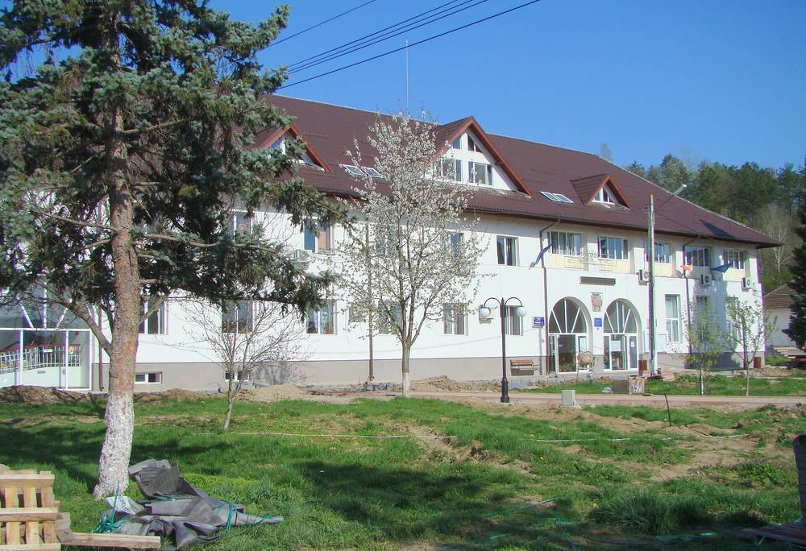

루마니아 고르지 군 트르구카르부네슈티, 시청 소유 1MW 태양광 단지 공사 마쳐…국가 전력계통 연결 앞둬

총사업비 650만9,322레이, 2024년 8월 에너지부와 지원계약…시청·산하 기관·가로등 전기 자가소비용…시장 "600만 레이 중 280만 레이 받아, 나머지 와야 연결", 내년엔 병원까지 전선 잇고 저장 배터리 사업도 신청
루마니아 남서부 고르지 군의 소도시 트르구카르부네슈티(Târgu Cărbunești)가 시청이 소유한 1MW 규모 태양광 단지 공사를 사실상 마치고 국가 전력계통 연결을 기다리고 있다. 이 단지는 시청과 산하 기관이 쓰는 전기를 스스로 대는 자가소비용으로, 가로등과 공공기관 운영에 드는 전기를 맡게 된다. 시청 활동보고서에 따르면 단지의 설치용량은 1.0004MW, 총사업비는 부가세를 포함해 650만9,322레이이며, 시는 2024년 8월 에너지부와 지원계약을 맺었고 시 예산에서 대는 몫은 25만 레이다. 더누츠 비러우(Dănuț Birău) 시장은 600만 레이 가운데 280만 레이를 배정받았다며, 나머지 돈이 들어와야 빚을 갚고 계통 연결도 할 수 있다고 밝혔다. 비러우 시장은 계통 연결에 서명해야 할 서류가 산더미라며 에너지부에 정식 장관이 있어 다행이라고 말했다. 시는 내년에 태양광 단지에서 병원까지 전선을 끌어 병원 전기 일부를 대는 방안을 추진하고, 저장 배터리 사업도 따로 신청해 두었다.
시민에너지 관점
영국 스윈던 시의회는 2010년대 중반 시가 추진한 태양광 단지의 사업비 일부를 주민이 소액 채권으로 투자할 수 있게 해, 공공 발전소에 주민 몫을 붙이는 길을 열었다. 트르구카르부네슈티처럼 시청이 직접 1MW 단지를 지어 공공 전기를 대는 것은 공공요금 부담을 줄이는 좋은 출발이지만, 위에서 내려올 재원이 늦어지면 다 지은 단지도 계통에 잇지 못하고 서 있게 된다. 작은 시가 주민 출자까지 받으면 일이 복잡해진다는 걱정이 있지만, 주민이 사업비를 나눠 대면 재원 지연에 덜 흔들리고 공공요금이 줄어든 몫이 어디에 쓰이는지도 주민이 함께 지켜볼 수 있다. 공공부지 태양광을 늘리려는 우리 지자체도 예산만 바라보지 말고 주민 채권·출자 몫을 처음부터 사업비 계획에 넣어야 한다.
출처: GorjOnline 2026-11-02 기자 표기 없음 원문 보기
출처: Pandurul 2026-11-03 Ana Maria Militaru 원문 보기
ルーマニア・ゴルジュ県トゥルグ・カルブネシュティ、市役所所有の1MW太陽光発電所が工事終了…国の電力系統への接続待ち
総事業費650万9,322レイ、2024年8月にエネルギー省と補助契約…市役所・傘下機関・街灯の電力を自家消費…市長「600万レイのうち280万レイを受け取り、残りが来れば接続できる」、来年は病院まで送電線を引き蓄電池事業も申請
ルーマニア南西部ゴルジュ県の小都市トゥルグ・カルブネシュティ（Târgu Cărbunești）が、市役所の所有する出力1MWの太陽光発電所の工事をほぼ終え、国の電力系統への接続を待っている。この発電所は市役所と傘下機関が使う電力を自ら賄う自家消費用で、街灯や公共機関の運営に必要な電力を担う。市役所の活動報告書によると、発電所の設備容量は1.0004MW、総事業費は付加価値税込みで650万9,322レイで、市は2024年8月にエネルギー省と補助契約を結び、市の予算から出す分は25万レイだ。ダヌツ・ビラウ（Dănuț Birău）市長は、600万レイのうち280万レイの配分を受けたとし、残りの資金が入らなければ債務を返済できず、系統接続もできないと明らかにした。ビラウ市長は、系統接続のために署名が必要な書類が山ほどあるとして、エネルギー省に正式な大臣がいるのは幸いだと述べた。市は来年、発電所から病院まで送電線を引いて病院の電力の一部を賄う計画を進めており、蓄電池事業も別途申請している。
市民エネルギーの視点
英国スウィンドン市議会は2010年代半ば、市が進めた太陽光発電所の事業費の一部を住民が少額の債券で投資できるようにし、公共の発電所に住民の持ち分を付ける道を開いた。トゥルグ・カルブネシュティのように市役所が自ら1MWの発電所を建てて公共の電力を賄うことは、公共料金の負担を減らす良い出発点だが、上から降りてくる財源が遅れれば、完成した発電所も系統につなげないまま立ち止まることになる。小さな市が住民の出資まで受け入れれば手間が増えるとの懸念もあるが、住民が事業費を分担すれば財源の遅れに振り回されにくくなり、公共料金が減った分がどこに使われるかを住民が一緒に見守ることもできる。公共用地の太陽光を増やそうとする韓国の自治体も、予算だけに頼らず、住民の債券・出資の持ち分を最初から事業費の計画に組み込むべきだ。
出典: GorjOnline 2026-11-02 記者名なし 原文を読む
出典: Pandurul 2026-11-03 Ana Maria Militaru 原文を読む
罗马尼亚戈尔日县特尔古卡尔布内什蒂市政府所有的1MW光伏电站完工…等待接入国家电网
总投资650万9,322列伊，2024年8月与能源部签订资助合同…用于市政府、下属机构和路灯自发自用…市长称"600万列伊中已拨280万列伊，余款到位才能并网"，明年拟拉电缆供电医院并已申请储能电池项目
罗马尼亚西南部戈尔日县小城特尔古卡尔布内什蒂（Târgu Cărbunești）市政府所有的1MW光伏电站已基本完工，正等待接入国家电网。该电站为自发自用项目，供应市政府及其下属机构用电，承担路灯和公共机构运行所需电力。根据市政府工作报告，电站装机容量为1.0004MW，总投资650万9,322列伊（含增值税），市政府于2024年8月与能源部签订资助合同，市预算承担25万列伊。市长达努茨·比勒乌（Dănuț Birău）表示，600万列伊中已获拨280万列伊，余款到位后才能偿还欠款并完成并网。比勒乌说，并网需要签署的文件堆积如山，所幸能源部现在有正式部长。该市计划明年从电站拉电缆到医院，为医院提供部分电力，另外还申请了储能电池项目。
市民能源视角
英国斯温登市议会在2010年代中期让居民可以通过小额债券投资市里推动的光伏电站的部分建设费用，为公共电站加上居民份额开了先例。像特尔古卡尔布内什蒂这样由市政府自建1MW电站供应公共用电，是减轻公共电费负担的良好起点，但上级拨款一旦迟到，建好的电站也只能闲置、无法并网。有人担心小城再吸收居民出资会让事情变复杂，但居民分担建设费用后，项目就不那么容易受拨款延误左右，居民也能一起监督节省下来的公共电费用在何处。想扩大公共用地光伏的韩国地方政府，也不应只依赖预算，而应从一开始就把居民债券和出资份额纳入项目资金计划。
来源: GorjOnline 2026-11-02 未署名 查看原文
来源: Pandurul 2026-11-03 Ana Maria Militaru 查看原文
Romanian town of Târgu Cărbunești in Gorj County finishes building its town-hall-owned 1MW solar park, awaits connection to the national grid
Total budget of 6,509,322 lei under an August 2024 financing contract with the energy ministry; power is for the town hall, its institutions and street lighting; mayor says it has received 2.8 million of 6 million lei and needs the rest to connect, plans a cable to the hospital next year and has applied for battery storage
Târgu Cărbunești, a small town in Gorj County in south-western Romania, has all but finished a 1MW solar park owned by its town hall and is now waiting to be connected to the national power grid. The park is meant for self-consumption, supplying electricity to the town hall and the institutions under it, including street lighting and the running of public buildings. According to the town hall's activity report, the park has an installed capacity of 1.0004MW and a total budget of 6,509,322 lei including VAT; the town signed a financing contract with the Ministry of Energy in August 2024, and the local budget's share is 250,000 lei. Mayor Dănuț Birău said the town has been allocated 2.8 million lei out of 6 million lei and must receive the remainder before it can pay off its debts and carry out the grid connection. He said there are piles of documents to be signed for the connection and that he is glad the energy ministry now has a full minister. Next year the town intends to run a cable from the park to the hospital to cover part of its electricity, and it has also applied for a battery storage project.
Citizen Energy View
In the mid-2010s Swindon Borough Council in England let residents invest through small bonds in part of the cost of a solar farm the council was developing, showing how a resident stake can be attached to a public power plant. A town hall building its own 1MW park to power public services, as Târgu Cărbunești has done, is a good start on cutting public energy bills, but when money from above arrives late, even a finished park can sit unconnected. Some worry that taking resident investment would make things too complicated for a small town, yet when residents share the cost a project is less exposed to funding delays, and they can help watch where the savings on public bills go. Korean local governments that want more solar on public land should stop relying on budgets alone and build resident bonds and shares into the financing plan from the start.
Source: GorjOnline 2026-11-02 No byline Read the original
Source: Pandurul 2026-11-03 Ana Maria Militaru Read the original